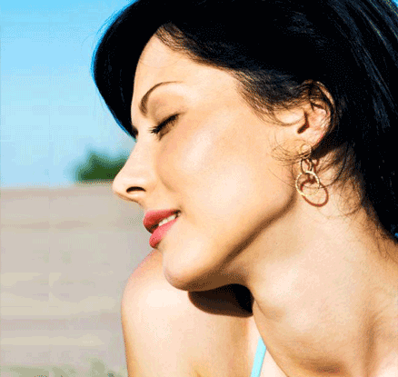
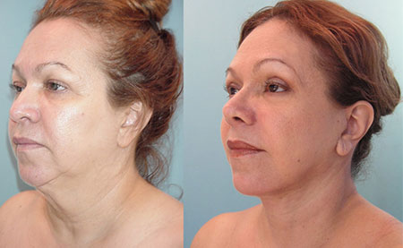
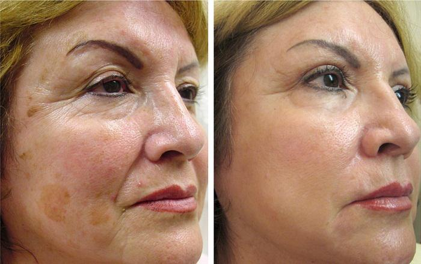
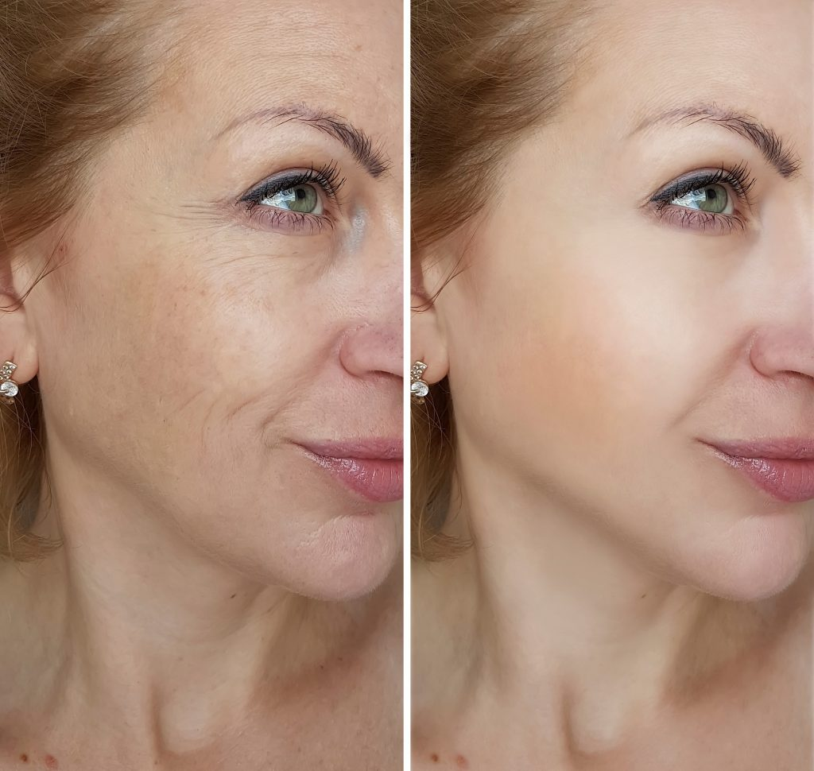
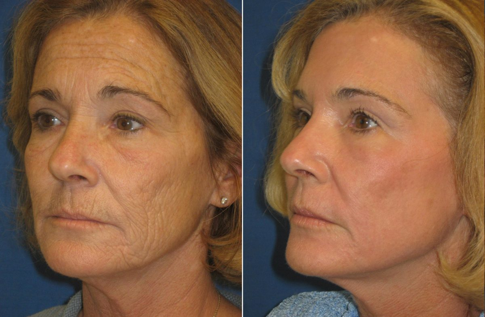

U emocionálních dívek je problém vrásek na tváři docela akutní, protože se objevují již ve věku třiceti, nebo dokonce dříve. Postupem času se vrásky stávají tak znatelnými, že se jich bez zvláštní pomoci nemůžete zbavit. Časopis Cosmopolitan konzultoval s kosmetičkou Kamilou Majerovou a sepsal top 5 tipů, jak správně omladit pokožku. Čteme a zapamatujeme si!
1. Více vody!
Tělo potřebuje vodu. Nedostatek vody způsobuje, že pokožka předčasně schne. Zkuste pít alespoň 1 litr vody denně. Vaše dermální buňky tak dostanou potřebné množství tekutiny a zůstanou elastické po mnoho let. Uvědomte si, že převařená voda a voda z kohoutku nejsou pro tělo prospěšné, vyberte čistou pramenitou vodu.
2. Správně se stravujte
Některé produkty doslova brání vráskám. Mezi ně patří ovoce a zelenina (s výjimkou škrobnatých), nízkotučné odrůdy masa a ryb, tvaroh a další přírodní kysaná mléka. Měli by se však vařit bez tuku a bez většího množství oleje.
3. Hlídejte hygienu obličeje
Pravidelně ráno a večer si umyjte obličej. Používejte speciální čisticí prostředky, které odpovídají vašemu typu pleti. Pokud nanášíte make-up, snažte se ho odstranit ihned po příjezdu domů. Takové pravidelné čištění pokožky odstraní staré odumřelé kožní buňky a zpomalí její stárnutí.
4. Používejte speciální přípravky pro vyhlazení vrásek
Pokud se již na tváři objevily vrásky, můžete je vyhladit pomocí speciálních přípravků. Bohužel asi 85% omlazovacích přípravků na trhu v oblasti krásy a zdraví nedává výsledky. Doporučím Vám jen dobrý přípravek, který používám při práci s pacienty. Dokonale vyhlazuje pokožku a používají ji téměř všichni kosmetologové.
5. Nemračte se
Možná jste to slyšeli více než jednou, ale měli byste se přestat mračit. A obecně se častěji obracejte k pozitivní stránce života. Pokud se podíváte na staré ženy, pak mají doslova všechno napsané na jejich tvářích. Ženy, které prožily polovinu svého života s nelítostnou tváří, byly naštvány a uraženy na celý svět – a to se vtisklo do vrásek. A ti, kteří navzdory všemu pracovali na sobě a dívali se na svět pozitivně – i v 60 a 70 vypadají dobře i bez plastické chirurgie.
Doufáme, že naše rady budou užitečné. Dle doporučení Kamily zveřejňujeme vám odkaz na přípravek pro vyhlazení vrásek. Abyste se seznámení s přípravkem a objednání, přejděte sem. Pokud budete mít otázky – napište do komentářů.
Komentáře:
Sára Vernerová
Děkuji za doporučení. Zkusím vyladit stravu jinak už se objevují první příznaky na obličeji)) a přípravek chci vyzkoušet
Adéla Mašková
Objednala jsem také, přípravek není drahý. V salónu za omlazující ošetření berou více než 400 eur!!
Katka Horáčková
Haha, už dávno mám ve skříňce tento přípravek a používám ho. Je mi 44, ohodnoťte foto! Používám už půl roku, mnozí říkají, že vypadám o 10 let mladší.
Eliška
Hodně jsem četla o tomto přípravku. Dlouho jsem přemýšlela a objednala. A nebylo to zbytečné! Podívejte se, mezi fotkami je rozdíl méně než foto:

Karel
Náhodně jsem narazil na tuto stránku a konečně jsem našel dárek pro mamku k narozeninám. Ohledně vody chci říct, že se musí pít kolem 2 l, 1 l je málo.
Tereza
Je mi jen 37 let a už všude mám vrásky! Poslední naděje je . Pomůže?
Edita Bílá
Pomůže, nepochybujte! Já používám pouze 2 týdny a už jsem omládla o 10 let. Podívejte se na foto, budete mít ještě lepší výsledek, vždyť jste mladá!
Аndrea
To je překvapení! Rozvedla jsem se ve 40, nyní žiji život naplno, setkávám se s muži o 15-20 let mladšími a cítím se neodolatelně! A teď už je mi kolem 60 let. Ano, vždy používám a dělám fitness. Vypadám lépe a šťastnější než mnoho mladých dívek! Vlastně vše, jak je psáno v posledním odstavci, žiji pozitivně. Podívejte se na výsledek za dva měsíce
Milena Javůrková
Potvrzuji výše uvedené. Já sáma pracuji na kosmetologické klinice a pravidelně používáme . Klienti jsou velmi spokojeni, přicházejí znovu a znovu, kromě toho jsou spokojeni s cenou procedur od . V lékárnách a obchodech není tento lék, naše klinika objednává na oficiálních webových stránkách.
Erika Veselá
8. března mi moje dcera darovala . Velmi dobrý přípravek, snadno použitelný. Výsledek jsem viděla po první aplikaci! Kůže se stala elastickou, jednobarevnou, modřiny pod očima zmizely. Po měsíci používání jsem mám tento výsledek, koukejte:
Jana Bryndová
Děkuji za rady! Vyzkouším)
Barbora Karlová
Zajímavé. Už jsem vyzkoušela hodně různých přípravků a nic nefunguje. Vyzkouším . Možná aspoň tohle pomůže. A cena je také nízká.
Andrea Veselá
Prosím vás, lze používat ve 25 letech? Mám už pod očima vrásky(( Moc mě to znervozňuje(((
Markéta
Ano, můžete a je to potřeba. Vrásky, které máte zmizí a nové se nebudou objevovat a pokožka bude vždy svěží.
Andrea Veselá
Děkuji! Objednala jsem na oficiálním webu. Čekám!
Helena Fialková
Já dělám jogu a to je vše. I když se vrásky stejně objevily mezi obočím, přemýšlím, jak je vyhladit.
Anna
Moje sestra žije v Americe, takže jsem někde četla o , nyní mě žádá, abych ji posílala, z Evropy je to na objednávku drahé. Poslal jsem jí dva balení: pro ni a jeji kamarádku. Teď jsem si objednal 7 kusů, všichni moji přátelé také chtějí, ona ještě na tom vydělává.
Ilona Vyskočilová
Vyzkoušela jsem tolik věcí, výsledek vůbec není vidět. Chtěla jsem jít na kliniku, ale když jsem zjistila ceny, odložila jsem tento nápad. Hledala jsem alternativní lék a našla jsem . Po několika týdnech jsem měla výsledek, který mě šokoval!
